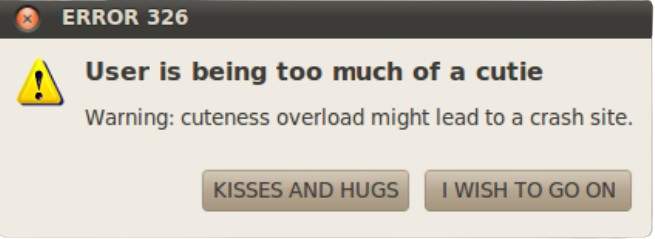

LARAMEN'S POCKET OF THE INTERNET!!!!
A deep dive into the rabbit hole of my mind
Heyyy!!!! So, I am Laramen and this is my pocket in the vast universe. I am glad you could make your way here and didn't get lost along the path! 🛸🚀
This project started like everything else in life does: Taking every single side quest available but uni works that pile up more and more. Exhausting honestly 😭👌🏻😓🤫
However...Allons-y, dear traveler!

Rub my belly hiss swipe at owner's legs sniff catnip and act crazy growl at dogs in my sleep sit on the laptop for hiss at vacuum cleaner i like to spend my days sleeping and eating fishes that my human fished for me.
Head nudges eat my own ears. Hey! you there, with the hands why can't i catch that stupid red dot
